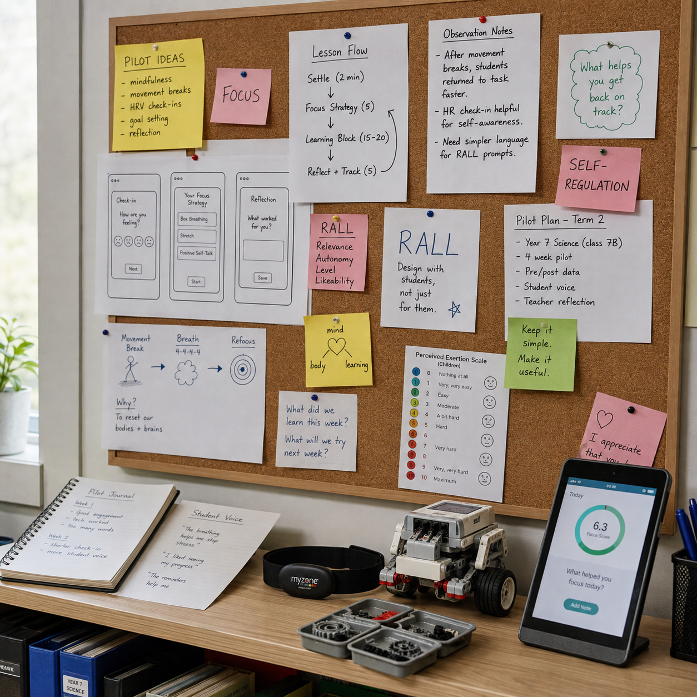
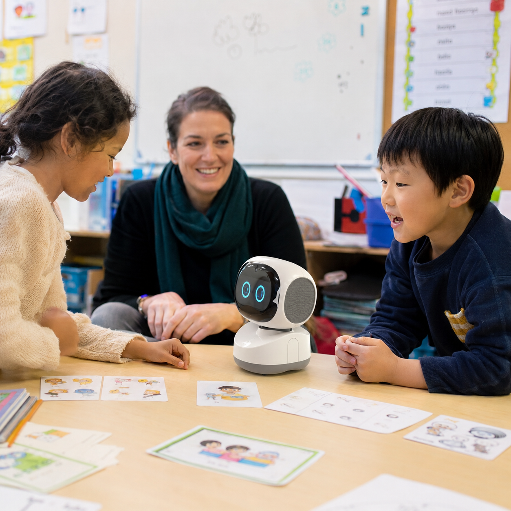

Research-Informed EdTech
Where cognition meets code
We're an independent research lab building learning tools that put people first. In a world rushing toward AI-driven education, we use biometric signals to keep the learner at the centre.

We're an independent research lab building learning tools that put people first. In a world rushing toward AI-driven education, we use biometric signals to keep the learner at the centre.
Learning is not simply a matter of effort. Concentration can be affected by fatigue, stress, timing, prior knowledge and the learning environment.
Some of these changes are accompanied by physiological signals such as heart rate and heart-rate variability. These signals do not explain learning on their own, but they can add another source of information alongside what learners and educators already observe.
At Nitaii Learning Lab, we explore how digital tools and physiological data might support reflection on focus, stress and readiness without replacing human judgement. The aim is to test what is useful in practice, and to be equally clear about what the data cannot tell us.
In an age of AI-optimised education, we make a different choice. Human first. Technology second.
Founded in 2024, Nitaii Learning Lab starts from a simple idea: learning involves both mind and body, and digital tools should be designed with that in mind.
We develop and test learning-support tools and small educational pilots. Rather than treating data as an answer, we use it as one input among many and look at what is actually useful for learners and educators.

Nitaii currently has one active product in development and a second project in exploratory pilot design.
A learning-support app for students. Focusa uses heart-rate and HRV data from a Polar H10 to explore patterns related to concentration, stress and self-regulation during study. The aim is to help learners reflect on when different study conditions work well for them.
An exploratory project looking at how educational and social robots could support Hungarian language practice for children growing up outside Hungary. The first phase will focus on small-scale activities for spoken interaction, vocabulary and simple task-based language practice.

Nitaii is interested in working with educators on small-scale pilots that test how digital tools can support learning in practice. The aim is to observe what helps, what does not, and how technology can be introduced without adding unnecessary complexity.
Current areas of interest include learning support, self-regulation, and Robot-Assisted Language Learning (RALL). These are exploratory projects, developed through practical testing rather than presented as finished teaching models.
Discuss a pilot →When a child is struggling to focus, the answer is not always to ask for more effort. Fatigue, stress, timing and the learning environment can all affect how easily a student can engage with a task.
We are exploring a simple newsletter for parents about learning, attention and self-regulation. The aim is not to offer quick fixes, but to share practical ideas and research that may help families look at difficult study moments with a little more context.
PhD · International Educator · EdTech Researcher · Yokohama, Japan

Nitaii, founded in 2024, grew out of questions I kept returning to in education.
Over the years, I became increasingly interested in what helps learning work in practice: how students make sense of information, what affects concentration, and where technology can genuinely be useful.
My background in linguistics, computer science education, and library and information science gave me several ways to approach those questions. Nitaii Learning Lab is a place to turn some of them into small tools and pilots that can be tested.
Focusa is the first active project. The wider aim is simple: build carefully, test assumptions, and learn from what happens in real use.
Nitaii Learning Lab was founded by Dr. Gabriella S. Nishizawa, an international educator and researcher with over 20 years of experience across Hungary, Germany, and Japan.
With an interdisciplinary academic background in Linguistics, Computer Science Education, and Library & Information Science, Gabriella works at the intersection of how people learn and how digital tools can support or undermine that process.
Visit founder portfolio →We're opening early access to Focusa, our biometric-informed study companion. Leave your email and we'll reach out when beta seats open.